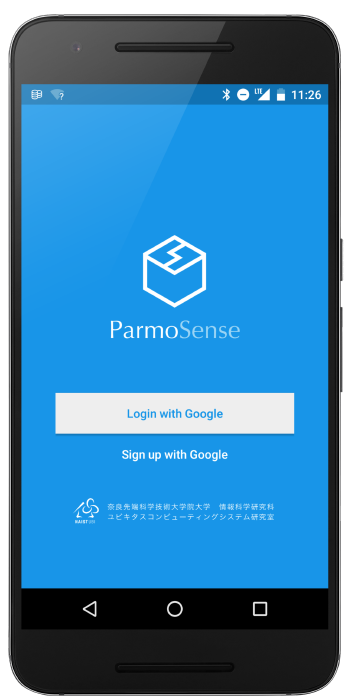
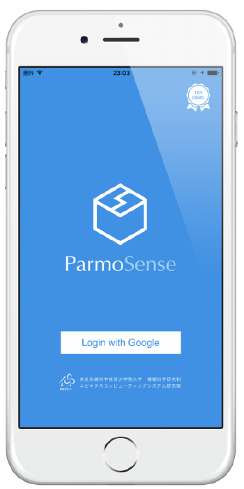

ParmoSense街にいる人が「気づき」を共有できるプラットフォーム


ParmoSenseは、街歩き・観光・地域イベントなどの参加者が、互いに「位置情報」に紐づく「情報」をリアルタイムに共有するためのプラットフォームです。
目的やイベントごとに “グループ＊1” を作ることができ、同じグループに参加している人だけで情報共有することも可能です。
参加するには、スマホアプリ「ParmoSense」を入れるだけ。 グループのQRコードを読み込むことで、様々なグループに参加することができます。
＊1 グループごとに専用ParmoSenseアプリケーションが自動構築されます。
ParmoSense についてもっと知る